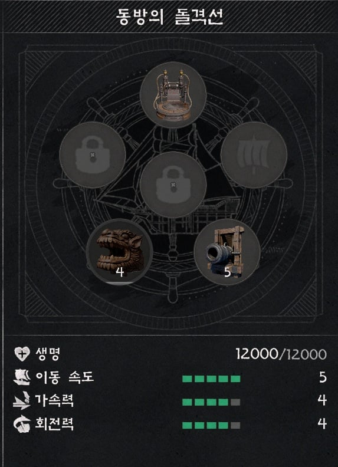
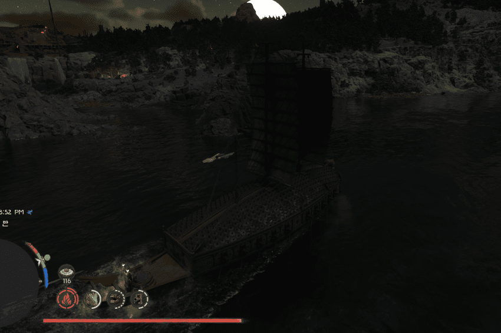
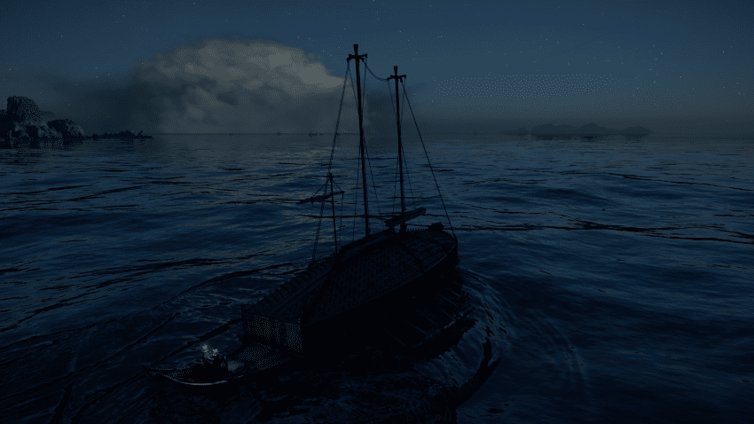
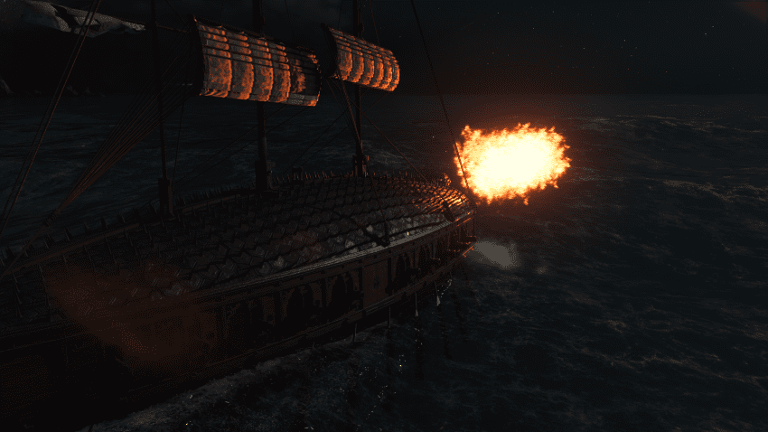
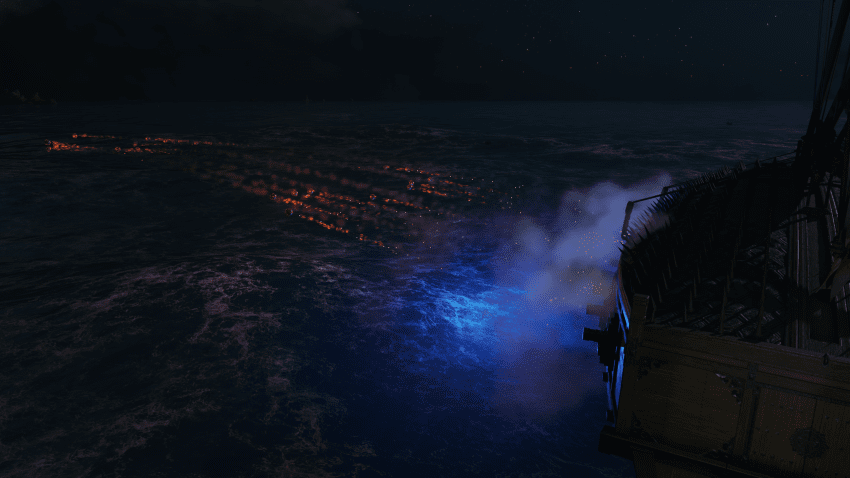
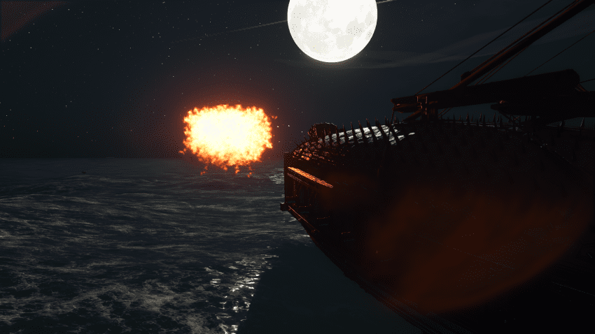
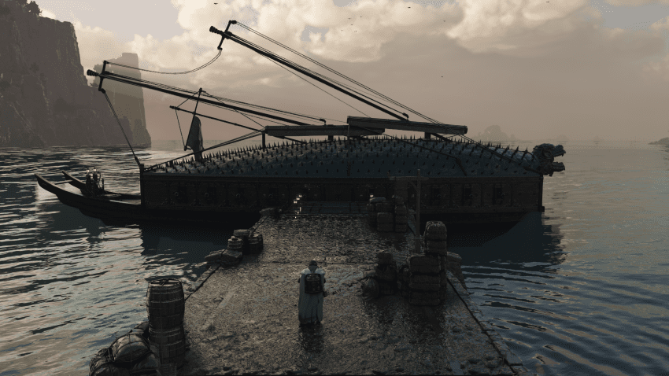
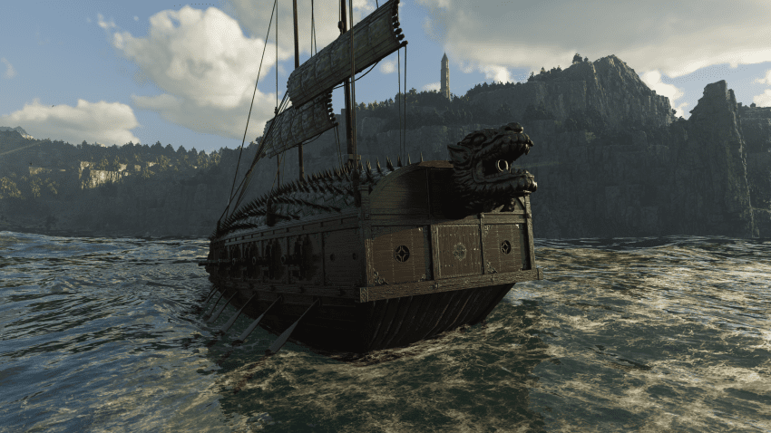
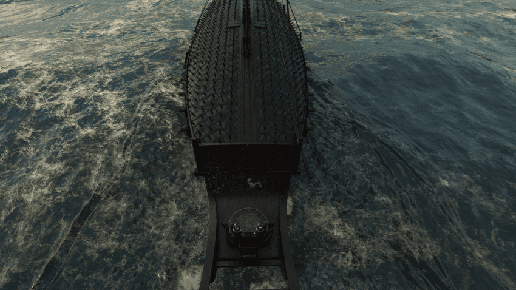
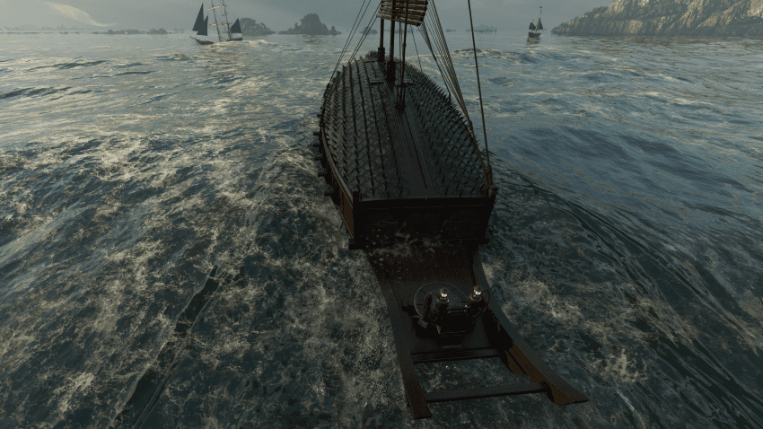
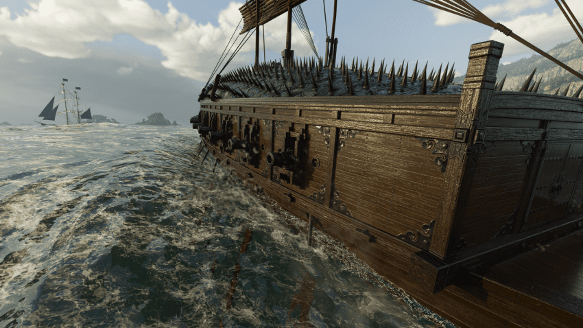
펄럭~











펄럭~
펄~럭
진짜 이 게임은 프로듀서 머리속에 떠오르는거 필터링 없이 다 집어넣나보구나 ㅋㅋㅋ
치트키 쓰네
아키에이지 생각난다 ㅅㅂㅠㅠ
쾌속선 홀몸으로 해적섬 가던 추억...
난 원대륙 안열렸을때 친구랑 나룻배타고 몇시간 걸려서 갔었음 ㅋㅋ가다가 물에빠져있는사람 태우고 같이 ㄱ? ㄱㄱ 동료 생기고 추억이구만..
붉사 dlc 나옴?
이게임 볼때마다 안타까운게 엔진도 잘 뽑아놨겠다
시대별 컨셉 나눠서 잘 갈무리하고 특히 스토리 디벨롭하면
트리플 A 게임 3개씩은 나올것같은데
억지로 하나에 다 몰아넣어서 그럭저럭한 잡탕 만든것 같음
지금 고티 후보까지 올라갔는데 대성공 아님둥?
돌돔 코스요리를 돌돔까스로 냈는데 짜증나잖아
닉이랑 평가가 정반대냐ㅋㅋㅋㅋㅋ
그게 게임의 가장 큰 단점이지만 최고의 장점이기도 해서ㅋㅋㅋㅋ
이야 이게 가능한데 검은사막에서 해양컨덴츠를 그따위로 한거야?와 독하다 독해
잘만만드는구만 검사유저들 왜케깐거임?

캬~ 이게 오픈월드지
조현병걸린 스토리라 하다 껏는데 좀 개선했나?
주인공 대사 치던데 보고 놀람
인헨스드 버전 나온 뒤 반응이 “진작 이렇게 내지” 였다고 함.
초반 스토리도 개선했고 지금 상태로 출시했다면 77점이 아니라 83점까진 봤을것같은 수준은 됨
스킵충인데 어제 챕터 8 깨는데 오~ 하는게 있긴 함 ㅋㅋ
심지어 뱃노래에 아리랑 있음 ㅋㅋㅋㅋㅋㅋㅋ
아리랑만 있는게 아니더라... 가설이타령부터 여우야여우야뭐하니 뭐 이런 멜로디까지 샘플링해서 노래로 만들어놓음
3060ti야.. 버틸수 있지?
스위치2 나오게찌?
거북선 간지터진다
대황거북선 ㅠㅠ